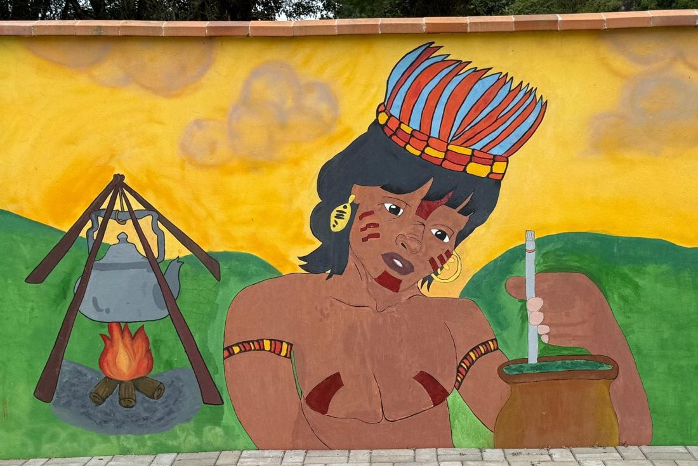

História · 1
O uso da erva-mate pelos povos indígenas
Antes de chegar às nossas cuias, a erva-mate (Ilex paraguariensis) já fazia parte da vida dos povos indígenas da América do Sul. Sua origem remonta aos Guarani, que viviam num território que ia da Amazônia ao Rio da Prata, ao longo dos rios Paraná, Paraguai e Uruguai. Segundo a Unesco, o hábito de tomar a erva-mate em infusão é uma herança direta desse povo (Qual é a origem..., 2023).
Para os Guarani, a erva-mate era muito mais que uma bebida: suas folhas eram usadas também em cerimônias e como moeda de troca, e a árvore era vista como um presente dos deuses. As folhas eram preparadas dentro de uma cabaça, e a bebida era filtrada com os dentes ou com um canudo furado, o antepassado da bomba que usamos hoje. Também se usava o taquapi, um filtro trançado com varas de taquara. Outros povos, como os Charrua, mascavam as folhas por seus efeitos medicinais (Qual é a origem..., 2023).
No século XVII, os padres jesuítas que chegaram ao Paraguai chegaram a proibir o consumo da erva-mate. A proibição não durou, e a extração e o comércio da erva se tornaram uma das principais atividades econômicas da região (Qual é a origem..., 2023). No Sul do Brasil, o costume também está ligado aos Kaingang (Carijada..., 2022).
📷 Imagem em pesquisa: a imagem do cartão é um mural do Colégio. Os estudantes continuam buscando imagens históricas (gravuras, pinturas) ou fotos sobre o uso da erva-mate pelos povos indígenas.
CARIJADA na Lomba Grande revive ritual indígena para produzir erva-mate. Extra Classe, Porto Alegre, 30 mar. 2022. Disponível em: https://www.extraclasse.org.br/cultura/2022/03/carijada-na-lomba-grande-revive-ritual-indigena-para-produzir-erva-mate/. Acesso em: 21 nov. 2026.
QUAL é a origem da erva-mate segundo a história? National Geographic Brasil, 11 dez. 2023. Disponível em: https://www.nationalgeographicbrasil.com/historia/2023/12/qual-e-a-origem-da-erva-mate-segundo-a-historia. Acesso em: 21 nov. 2026.